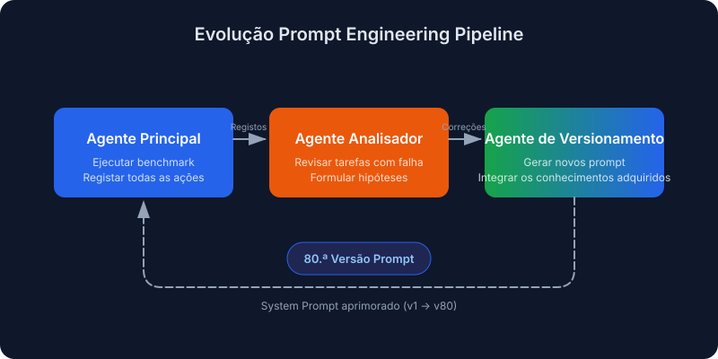
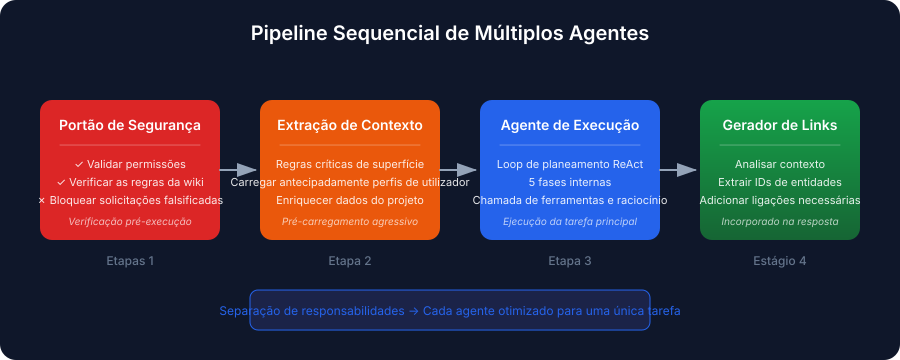
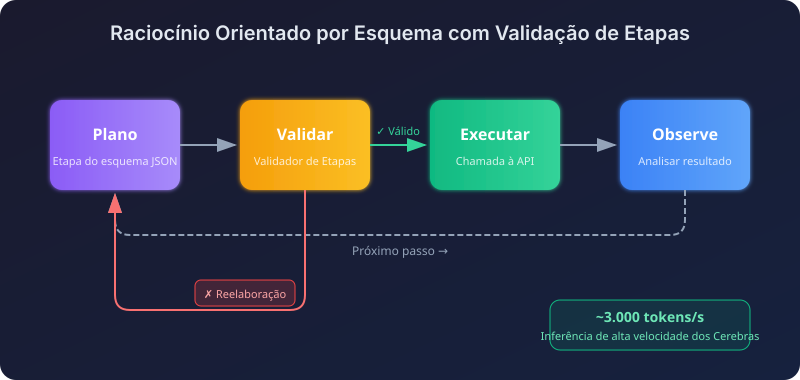
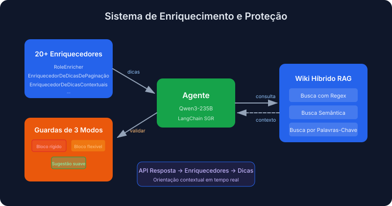
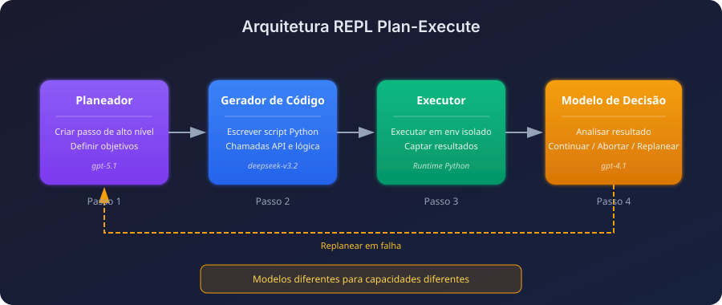
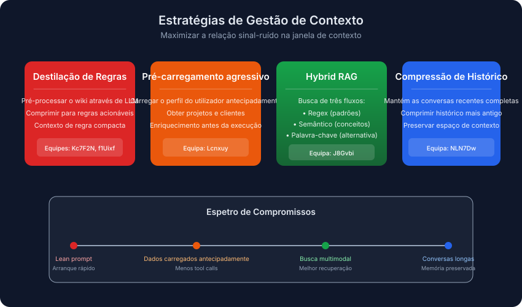
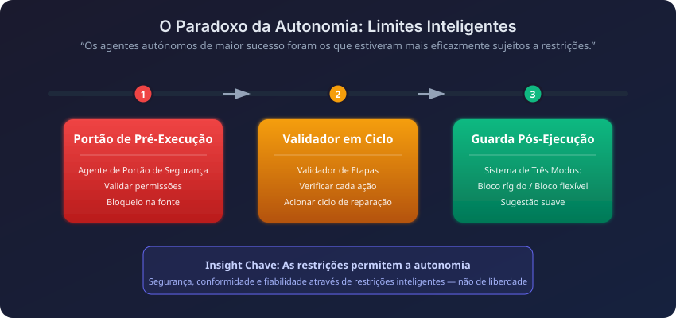

Tradução automática
Este artigo foi traduzido automaticamente a partir da versão original em inglês.
Enterprise RAG Challenge 3 (ECR3): Arquiteturas de Agentes de IA Vencedoras
O Enterprise RAG Challenge 3 (ECR3) acabou de terminar. 524 equipas, mais de 341.000 execuções de agentes, e apenas 0,4% das equipas atingiram uma pontuação perfeita. Com a leaderboard e os relatórios agora públicos, analisei as soluções vencedoras para perceber o que as melhores equipas fizeram de forma diferente.
Este artigo cobre o que é o ECR3, como eram as tarefas e os padrões que continuei a ver nas arquiteturas que funcionaram.
Resumo: Pipelines multiagente superaram os monolíticos. A equipa vencedora usou engenharia evolutiva de prompts ao longo de mais de 80 iterações automatizadas. Os vencedores investiram seriamente em guardrails (verificações de segurança pré-execução, validadores no loop, proteções pós-execução) e em estratégia de contexto. O que entrava no contexto importava mais do que a quantidade.
O que é o Enterprise RAG Challenge?
O Enterprise RAG Challenge 3 é um projeto de investigação em larga escala e colaborativo que testa como agentes de IA autónomos lidam com tarefas empresariais complexas. Ao contrário de benchmarks estáticos, o ECR3 corre sobre o Agentic Enterprise Simulation (AGES), uma simulação de eventos discretos que expõe uma API empresarial realista.
Porque é que o ECR3 importa
Através do AGES, os agentes trabalham dentro de uma empresa fictícia que tem:
- Perfis de colaboradores com competências e departamentos específicos
- Projetos com atribuições de equipa e relações com clientes
- Wiki corporativa com regras de negócio e hierarquias de permissões
- Registo de tempo e operações financeiras
Cada tarefa inicia a sua própria simulação com dados novos, por isso os agentes não podem memorizar nada entre execuções.
O nível de dificuldade
A leaderboard é exigente:
| Métrica | Valor |
|---|---|
| Equipas registadas | 524 |
| Total de execuções de agentes | 341.000+ |
| Tarefas disponíveis | 103 tarefas empresariais únicas |
| Pontuação perfeita (100,0) | Apenas 0,4% das equipas |
| Pontuação ≥ 0,9 | Apenas 1,1% das equipas |
Tipos de tarefas
As tarefas abrangem várias áreas de competência:
- Raciocínio multi-hop: Cruzar competências de colaboradores com atribuições de projeto
- Validação de permissões: Impedir alterações salariais ou acessos a dados não autorizados
- Consultas ambíguas: Lidar com pedidos de utilizadores multilingues e parafraseados
- Conformidade estrita de output: Incluir ligações obrigatórias a entidades nas respostas
O que realmente venceu
Quatro padrões apareciam repetidamente no topo da leaderboard:
- Pipelines multiagente superaram agentes monolíticos. Dividir o trabalho funcionou melhor do que um único agente grande a tentar fazer tudo.
- Os agentes mais autónomos eram os mais restringidos. Os guardrails não foram uma reflexão tardia.
- A evolução automatizada de prompts superou a engenharia manual. Os melhores prompts passaram por mais de 80 gerações.
- A estratégia de contexto fez a maior parte do trabalho. Não mais contexto, mas o contexto certo.
Principais abordagens vencedoras
As cinco arquiteturas abaixo seguem direções muito diferentes, desde evolução totalmente automatizada de prompts até retrieval híbrido. Cada uma tem componentes que vale a pena aproveitar.
1. Engenharia evolutiva de prompts (Equipa VZS9FL / @aostrikov)
A abordagem com melhor pontuação automatizou a engenharia de prompts através de um loop de autoaperfeiçoamento.

Em vez de ajustar prompts manualmente, a equipa construiu um loop de três agentes que permite ao agente aprender com as suas próprias falhas.
Pipeline de três agentes:
| Agente | Papel |
|---|---|
| Agente Principal | Executa o benchmark, regista todas as ações e falhas |
| Agente Analisador | Revê tarefas falhadas, formula hipóteses sobre causas-raiz |
| Agente Versionador | Gera uma nova versão do prompt incorporando aprendizagens |
O resultado: O prompt de produção foi a 80.ª versão gerada automaticamente. Cada versão corrigia um padrão de falha específico que surgia nos logs da execução anterior. A maioria eram casos limite que só se detetam depois de olhar para um trace falhado durante uma hora.
Stack: claude-opus-4.5 com Anthropic Python SDK e Tool Use nativo.
2. Pipeline sequencial multiagente (Equipa Lcnxuy / @andrey_aiweapps)
Esta abordagem descartou o agente monolítico e construiu um pipeline sequencial de especialistas, cada um suficientemente pequeno para ser realmente bom no seu trabalho.

O pipeline de 4 fases:
- Security Gate Agent: Verificação pré-execução que valida permissões face às regras da wiki antes de o loop principal correr.
- Context Extraction Agent: Extrai as regras críticas de prompts extensos e pré-carrega dados de utilizador, projeto e cliente.
- Execution Agent: Planeamento ao estilo ReAct com 5 fases internas (Identity → Threat Detection → Info Gathering → Access Validation → Execution).
- LinkGeneratorAgent: Integrado dentro da ferramenta de resposta, analisa o contexto para incluir as ligações obrigatórias às entidades.
O agente LinkGenerator é a parte mais interessante. Corrigiu um dos modos de falha mais comuns: um agente que dá a resposta certa mas se esquece das ligações de referência obrigatórias.
Stack: frameworks atomic-agents e instructor com gpt-5.1-codex-max, gpt-4.1 e claude-sonnet-4.5.
3. Raciocínio guiado por schema com validação de passos (Equipa NLN7Dw / Ilia Ris)
Esta equipa combinou SGR com inferência muito rápida e um validador em tempo real. A aposta: muitas decisões rápidas e validadas superam uma resposta lenta e deliberada.

Componentes principais:
| Componente | Função |
|---|---|
| StepValidator | Inspeciona cada passo proposto. Se algo estiver errado, devolve-o para retrabalho com comentários. |
| Gestão de contexto | Plano completo da interação anterior, mais histórico comprimido para interações mais antigas |
| Enriquecimento dinâmico | Extrai automaticamente perfil do utilizador, projetos, clientes; o LLM filtra para injetar apenas dados relevantes para a tarefa |
| Wrappers de auto-paginação | Todos os endpoints de listagem devolvem automaticamente resultados completos |
A vantagem em velocidade vem da execução em Cerebras a cerca de 3.000 tokens/segundo. A esse ritmo, o agente pode dar-se ao luxo de reconsiderar um passo em vez de se comprometer com uma primeira resposta lenta de um modelo mais pesado.
Stack: gpt-oss-120b em Cerebras, com uma implementação NextStep de SGR personalizada.
4. Sistema de enrichers e guardas (Equipa J8Gvbi / @mishka)
Esta abordagem adicionou “dicas inteligentes” não bloqueantes e um sistema de guardas em camadas a uma base SGR. À medida que as respostas da API chegam, os enrichers inspecionam-nas e indicam discretamente ao agente aquilo a que deve prestar atenção.

O sistema de enrichers:
Mais de 20 enrichers inspecionavam respostas da API e injetavam dicas contextuais:
RoleEnricher: "You are LEAD of this project, proceed with update."
PaginationHintEnricher: "next_offset=5 means MORE results! MUST paginate."
Sistema de guardas com três modos:
| Modo | Comportamento |
|---|---|
| Bloqueio rígido | Ações impossíveis bloqueadas permanentemente |
| Bloqueio suave | Ações arriscadas bloqueadas na primeira tentativa, permitidas em nova tentativa |
| Dica suave | Orientação sem bloqueio |
Wiki RAG híbrida: Três fluxos de pesquisa (regex, semântico, keyword) a correr em paralelo, com o melhor para cada tipo de consulta a prevalecer.
Stack: qwen/qwen3-235b-a22b-2507 sobre o framework SGR da LangChain.
5. REPL de plan-execute (Equipa key_concept_parallel)
Esta arquitetura impôs uma separação rígida entre planeamento e execução e usou um loop de geração de código. Na prática, um REPL: o agente planeia um passo, gera código, executa-o e decide o que fazer a seguir.

Modelos diferentes para trabalhos diferentes: um planner planeia, um modelo de code-gen escreve Python e um modelo de decisão mais pequeno decide o que fazer após cada passo.
Configuração multi-modelo:
| Fase | Modelo |
|---|---|
| Planeamento | openai/gpt-5.1 |
| Geração de código | deepseek/deepseek-v3.2 |
| Decisão pós-passo | openai/gpt-4.1 |
| Resposta final | openai/gpt-4.1 |
O REPL de conclusão de passos:
- O planner cria um passo de alto nível.
- O modelo de code-gen escreve um script Python para esse passo.
- O script é executado num contexto isolado.
- O modelo de decisão analisa o resultado e escolhe: continuar, abortar ou replanear.
O caminho de replanning é onde este design realmente se destaca. Quando um passo falha parcialmente, o modelo de decisão pode reescrever o resto do plano em vez de insistir num plano quebrado.
Padrões que apareceram em todo o lado
Para além das arquiteturas individuais, alguns hábitos repetiam-se em quase todas as submissões de topo.
A gestão de contexto fez a maior parte do trabalho
As melhores equipas perceberam que a qualidade do contexto é o teto do desempenho de um agente.

| Estratégia | Abordagem | Melhor para |
|---|---|---|
| Destilação de regras | Pré-processar a wiki via LLM numa síntese de ~320 tokens | Prompts leves, arranque rápido |
| Pré-carregamento agressivo | Carregar dados de utilizador/projeto/cliente antes da execução | Minimizar chamadas a ferramentas |
| RAG híbrido | Fluxos de pesquisa regex + semântico + keyword | Necessidades complexas de retrieval |
| Compressão de histórico | Manter interações recentes completas, comprimir histórico mais antigo | Conversas longas |
Trade-off: As equipas Kc7F2N e f1Uixf concluíram que a qualidade do contexto supera a quantidade. A f1Uixf verificou mesmo que a compressão do histórico prejudicava o desempenho, por isso manteve o histórico completo e apoiou-se antes em modelos com contexto longo.
Guardrails: quanto mais autónomo o agente, mais precisa deles
Os agentes com melhor pontuação também tinham as restrições mais rigorosas à sua volta. Parece contraditório, mas não é. Um agente autónomo tem mais formas de falhar, por isso precisa de mais pontos onde algo o possa travar.

| Tipo de guardrail | Quando | Exemplo |
|---|---|---|
| Portas pré-execução | Antes do arranque do loop principal | Security Gate Agent valida permissões face às regras da wiki |
| Validadores no loop | Durante o raciocínio | StepValidator verifica cada ação proposta, desencadeia retrabalho se houver falhas |
| Guardas pós-execução | Antes da submissão final | Sistema de Guardas com Três Modos valida a completude da resposta |
Wrappers de ferramentas inteligentes
As equipas de topo construíram camadas de abstração sobre a API bruta:
- Auto-paginação: Os wrappers percorrem todas as páginas e devolvem o dataset completo.
- Normalização difusa: "Willingness to travel" é traduzido para o campo de API
will_travel. - Ferramentas de raciocínio especializadas: ferramentas
think,planecriticpara deliberação controlada.
Modos de falha comuns e como os vencedores os corrigiram
Mesmo os melhores agentes partilhavam os mesmos pontos cegos. As correções foram estruturais, não ajustes de prompt:
| Modo de falha | Descrição | Correção arquitetural |
|---|---|---|
| Bypass de permissões | Executar ações restritas sem verificar permissões do utilizador | Security Gate Agent pré-execução; sequência obrigatória Identity → Permissions → Execution |
| Ligações de entidades em falta | Resposta textual correta mas sem as ligações de referência obrigatórias | LinkGeneratorAgent embutido na ferramenta de resposta |
| Exaustão de paginação | Processar apenas a primeira página de resultados de listagem | Wrappers de auto-paginação para todos os endpoints de listagem |
| Loops de tool-calling | Ficar preso a chamar repetidamente a mesma ferramenta com pequenas variações | Limites de turnos; modelos focados em raciocínio (Qwen3) |
| Sobrecarga de contexto | Encher o contexto com secções irrelevantes da wiki | Destilação de regras; filtragem dinâmica de contexto |
Principais conclusões
Se está a construir agentes e quer aplicar isto:
- Use pipelines multiagente. Os agentes monolíticos perderam. As melhores equipas usaram 3 a 5 especialistas para segurança, extração de contexto, planeamento e execução.
- Automatize a iteração de prompts. O prompt vencedor era a versão 80. Um loop vai encontrar padrões de falha que nunca detetaria manualmente.
- Invista seriamente em guardrails. Verificações de segurança pré-execução, críticos no loop e guardas pós-execução. Os agentes com aspeto mais autónomo eram os mais delimitados.
- Crie wrappers para as suas ferramentas. Paginação, enriquecimento de dados e fuzzy matching devem estar nos wrappers. Uma equipa construiu mais de 20 enrichers que observavam respostas da API em tempo real.
- Leve a estratégia de contexto a sério. Destilação de regras (sínteses de ~320 tokens), pré-carregamento e filtragem dinâmica. A velocidade também ajuda. Uma equipa corria a ~3.000 tokens/segundo e, por isso, podia replanear com frequência.